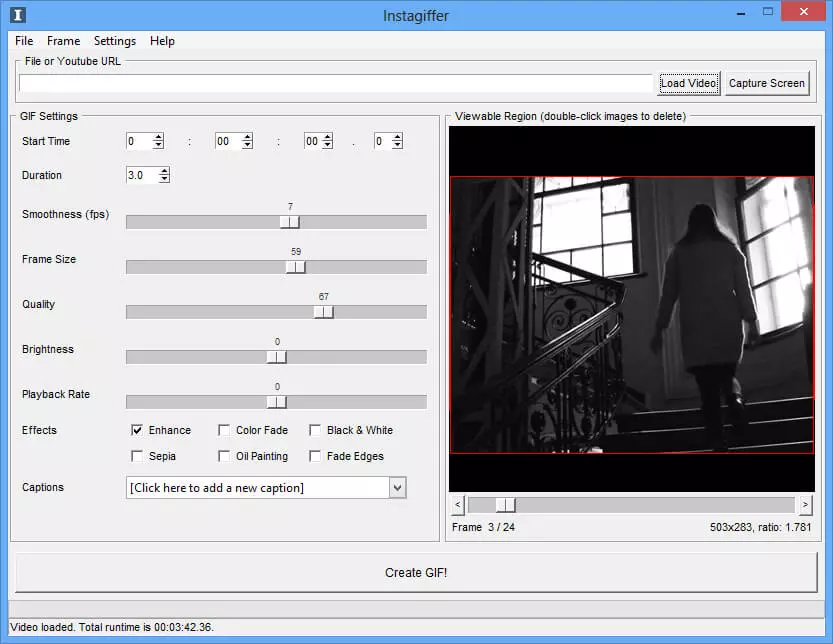

_____________________________________________________________________________________________________________
Программа для гифок на Windows и Mac. InstaGiffer создает анимированную графику из роликов, выложенных на YouTube, или из любого видеофайла MKV, FLV, AVI, MP4. Она удобна в использовании, полностью бесплатна и не размещает водяной знак на картинку. Просто добавьте видео, URL-адрес или запишите экран. Далее измените настройки: установите начало и конец гифки, ее продолжительность, пропорции, качество и примените эффекты.
Также софт включает в себя готовые фильтры.
Минусом является меню на английском языке, а также отсутствие поддержки.
Логотип InstaGiffer

Начальная страница InstaGiffer
Главные преимущества InstaGiffer:
Главные недостатки InstaGiffer:
А как пользоваться данной программой можно посмтотреть в видео ниже
Как пользоваться программой InstaGriffer